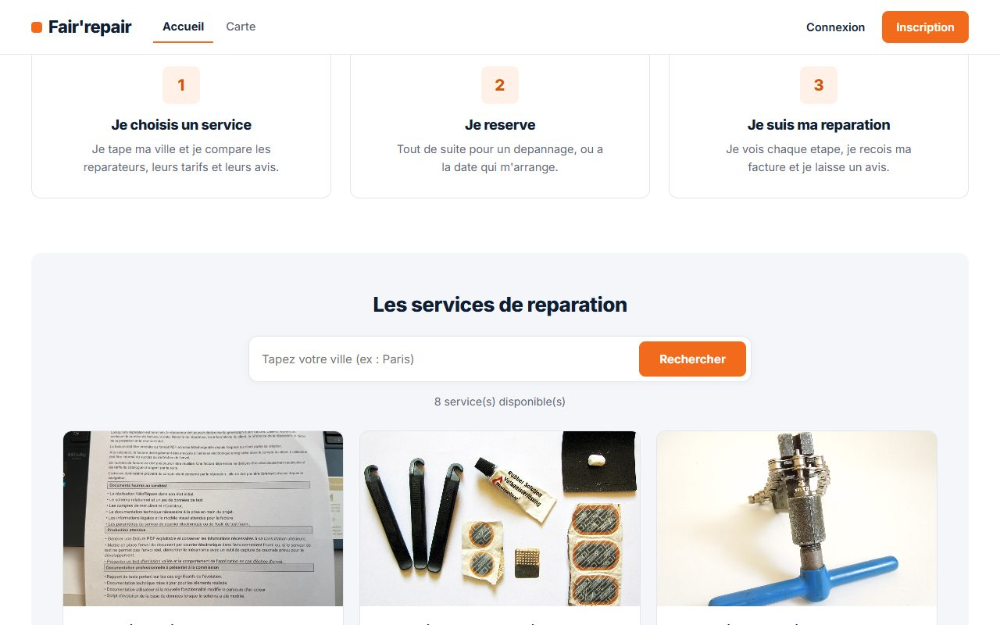
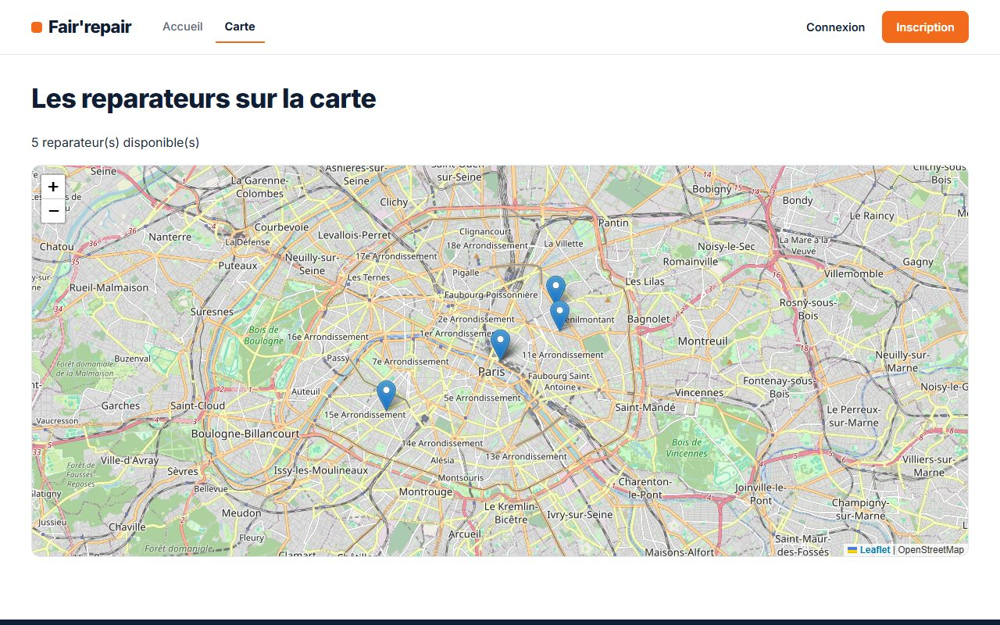
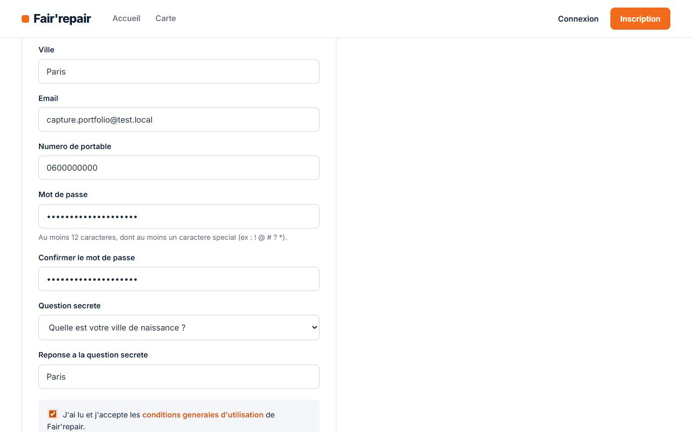
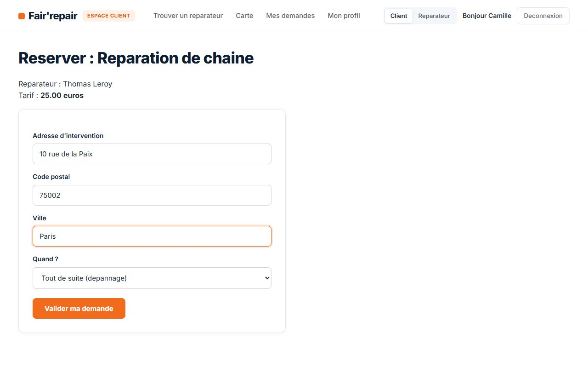
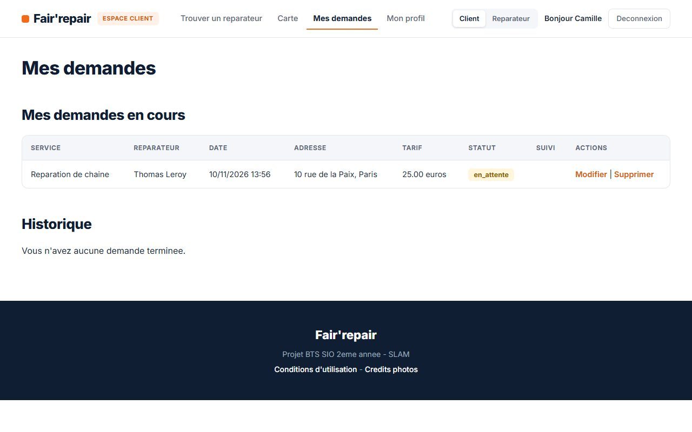

// MISE EN RELATION CYCLISTES & RÉPARATEURS DE VÉLOS
PROJET BTS SIO SLAM
À PROPOS
Fair'repair est un site web qui met en relation des cyclistes ayant un vélo à réparer
avec des réparateurs. Un réparateur publie ses services (changement de pneu, réglage des freins…)
avec un tarif et un rayon d'intervention, et un client réserve une intervention, en dépannage
immédiat ou à une date précise. Le réparateur suit ensuite la réparation étape par étape,
puis valide le paiement, ce qui génère automatiquement une facture.
APERÇU DU SITE
Page d'accueil

Liste des services

Carte des réparateurs (Leaflet)

Formulaire d'inscription

Réservation d'un service

Suivi des demandes du client
LES ACTEURS
Le client consulte les services, réserve, suit l'avancement de sa réparation et consulte ses factures.
Le réparateur gère ses services et ses rendez-vous, fait avancer les étapes, valide le paiement et voit ses gains.
L'administrateur consulte l'historique des tentatives de connexion, avec des filtres.
Un même compte peut être à la fois client et réparateur, et basculer d'un espace à l'autre.
FONCTIONNALITÉS
Inscription, connexion, « se souvenir de moi » et mot de passe oublié par question secrète.
Création, modification et suppression des services par le réparateur.
Réservation d'un service, puis suivi du statut : en attente, confirmée, reçu, diagnostic, en cours, prêt, terminée.
Paiement validé par le réparateur et facture générée automatiquement.
Carte des réparateurs avec Leaflet et OpenStreetMap.
Avis et notes de 1 à 5 étoiles sur les réparateurs.
SÉCURITÉ
Requêtes préparées PDO contre les injections SQL.
Mots de passe et réponses secrètes chiffrés en base.
Contrôle d'accès sur chaque page protégée, selon le rôle.
Blocage du compte après plusieurs échecs et historique des connexions.
BASE DE DONNÉES
12 tables. client et reparateur sont des spécialisations de user : un même compte peut avoir les deux rôles. reserver est la table centrale, elle relie un client à un service ; chaque changement de statut est gardé dans historique_statut, et une réservation ne peut avoir qu'une seule facture.